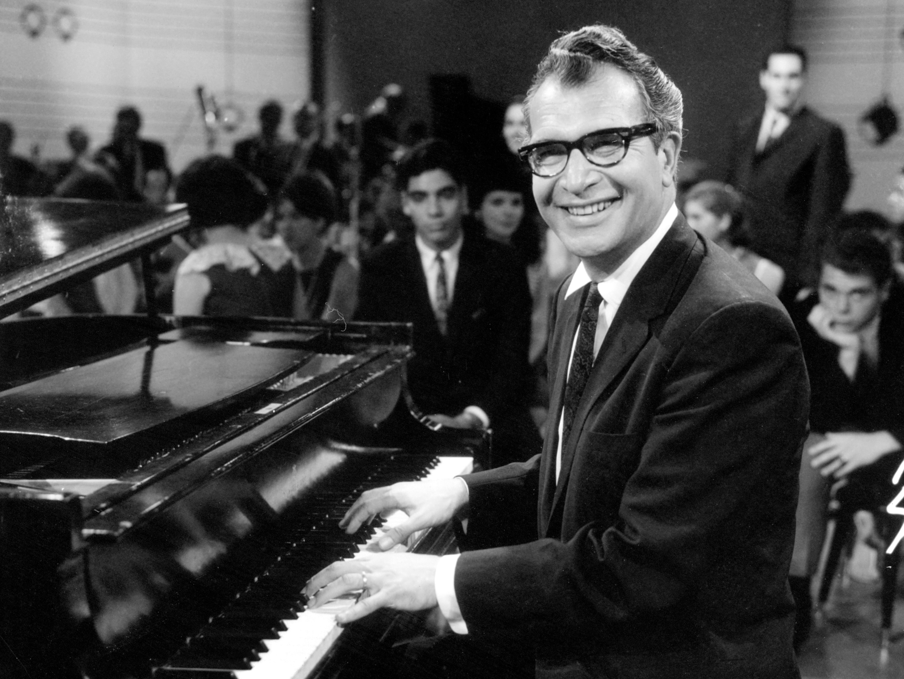
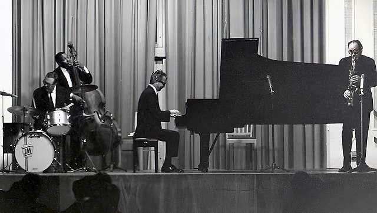

Since I need to fill this page with stuff, I'll just copy and paste Dave Brubeck's biography.
Dave Brubeck (born December 6, 1920, Concord, California, U.S.—died December 5, 2012, Norwalk, Connecticut) was a popular American jazz pianist who brought elements of classical music into jazz and whose style epitomized that of the “West Coast movement.”
Brubeck was taught piano by his mother from the age of four—and for a period of time he deceived her by memorizing songs rather than learning to read music. He worked as a pianist with local jazz groups from 1933 and studied music at the College of the Pacific (1938–42) in Stockton, California, where he formed and led a 12-piece orchestra. During World War II, Brubeck conducted a service band in the army of Gen. George S. Patton. After the war, he studied composition at Mills College in Oakland, California, under the French composer Darius Milhaud. During this period, Brubeck also studied with Arnold Schoenberg, the inventor of the 12-tone system of composition. He formed the Dave Brubeck Octet in 1946, employing fellow classmates as band members. The group made several recordings (released in 1951) that reflected Brubeck’s studies in polyrhythms and polytonality (respectively, two time signatures or two keys played simultaneously). The octet recordings sound ahead of their time even by contemporary standards, and the highly experimental group disbanded after their radicalism failed to find an audience. Brubeck next led a trio that proved popular in the San Francisco area, but he was forced to disband it in 1951 after he was incapacitated for many months by a back injury.
In late 1951 Brubeck reformed the trio, which soon became a quartet with the addition of alto saxophonist Paul Desmond. Within several months they attained a measure of national fame, largely by word of mouth among West Coast critics who championed the group’s innovations. Also during this time, Brubeck became one of the first jazz musicians to regularly tour and conduct seminars at college campuses; several albums recorded at college concerts—such as Jazz at Oberlin (1953), Jazz at the College of the Pacific (1953), Jazz Goes to College (1954), and Jazz Goes to Junior College (1957)—are among Brubeck’s most highly regarded. For much of the decade, Brubeck and Desmond remained the only constants in the group; permanent members Joe Morello (drums) and Eugene Wright (bass) joined in 1956 and ’58, respectively.
